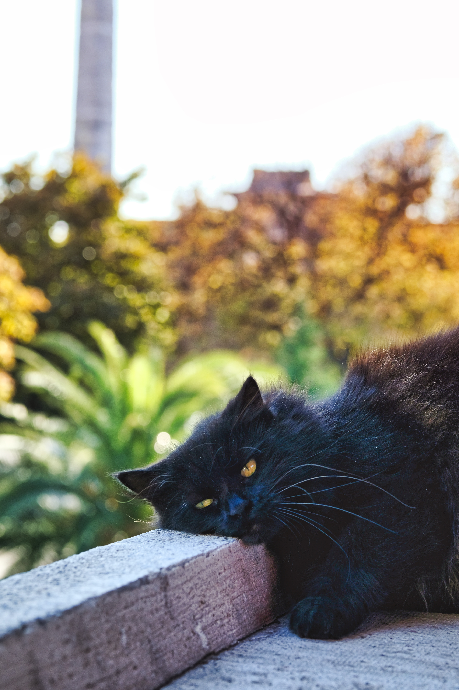

She is sensetive. So be careful wwhen touch her body. Also her claws is very sharp. She is more ative then Dan-chu. She also usually sleep, but not as danchu. She like to play with her toy with sister at noon. Although she is fast, she exhausted very well.

She don't like tuna can, but she like normal food. When she is hungry, she haul like "miaooooo" and bite my leg with her sharp teeth. Moom like to give food to danbe too. And danbe like it so much.